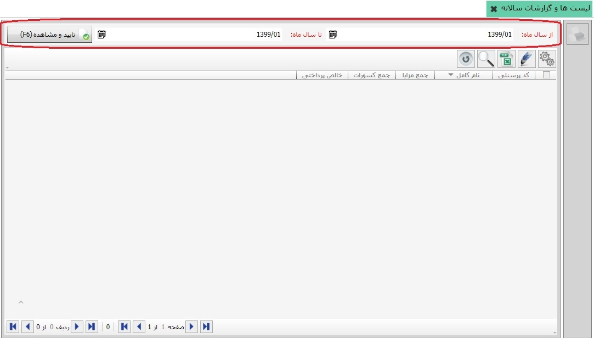
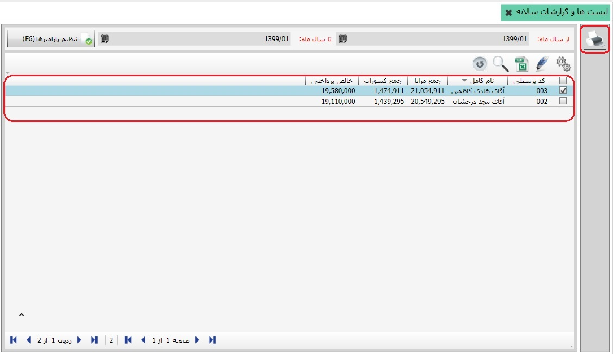

در این قسمت می توانید گزارشات سالانه از لیستهای حقوق و دستمزد تهیه کنید، به تصویر زیر توجه نمایید:
در سر برگ صفحه ی بالا ابتدا گزینه های از سال ماه و تا سال ماه را تعیین نمایید و سپس بر روی کلید تایید و مشاهده کلیک کنید، تصویر زیر نمایان می شود:
همین طور که مشاهده می کنید در میان تصویر بالا نام کارکنان نمایان شد، شما می توانید به صورت تک تک و یا جمعی گزارش حقوق کارکنان را مشاهده بفرمایید، برای مشاهده ی گزارش کافی است کارکنان مورد نظر را انتخاب کنید و سپس بر روی کلید پرینت کلیک کنید.